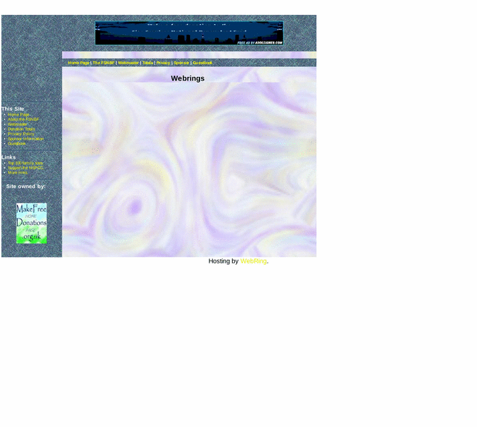

Previewing: Support the Fire Services National Benevolent Fund Previewing: Support the Fire Services National Benevolent Fund 
Use the left/right red arrow controls to navigate through this ring - Click the preview image to visit the member site.

Make free donations to the Fire Services National Benevolent Fund (FSNBF), just by searching the web. Help firefighters both serving and retired and their families. - Officially approved by the FSNBF.
Support the Fire Services National Benevolent Fund owned by:
 donate_4free donate_4free
A member of the original webring since 11/18/2005.
|
|